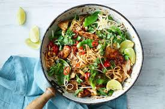

A Spoonful Of Home
about paragraph

Spoonometer
Based on the popular
"spoon theory",
the spoonometer tells you how much effort a recipe will take.
Every recipe gets a score between 1-3 spoons based on the amount of
time, steps, tools and mental energy they require, which will help you plan meals
with your energy levels in mind!
- 1/3 spoons is quick and easy.
- 3/3 spoons will take a considerable bit of time and effort.
- 2/3 is a nice in-between.
Recipes
I've organised my recipes into four different categories ranging from dinners that will feed one person for days and desserts to top them off, to cocktails and snacks perfect for a nice night-in. Just click a card and get cooking!
DINNERS
